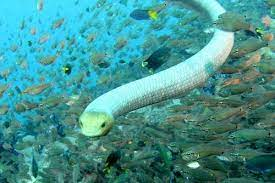

Yellowish or pale brownish dorsally, with darker brown or blackish crossbars. Crossbars may be all the same width, or they may be alternately broad and narrow. White ventrally, with or without small dark brown spots.
Adults may attain a total length of 105 cm (3 ft 5+3⁄8 in), with a tail 12 cm (4+3⁄4 in) long.
Dorsal scales imbricate (overlapping), strongly keeled on the neck, weakly keeled on the body; arranged in 31–36 rows around the neck, in 36 to 41 rows at midbody. Ventrals 200–236.
Head moderate. Body stout. Rostral as broad as deep. Nasals shorter than the frontal, more than twice as long as the suture between the prefrontals. Frontal longer than broad, as long as its distance from the end of the snout. One preocular and two postoculars. Two superposed anterior temporals. Seven or eight upper labials, third and fourth entering the eye. Only one pair of small chin shields. Ventrals distinguishable, but very small, either smooth or bicarinate.